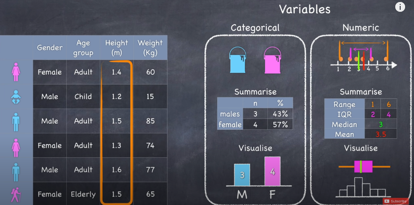
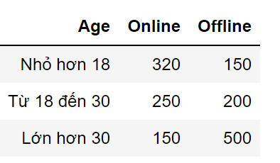
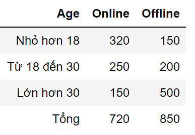
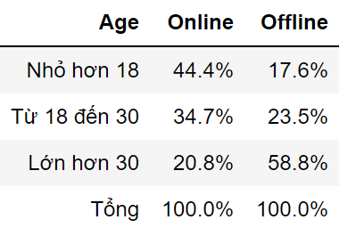
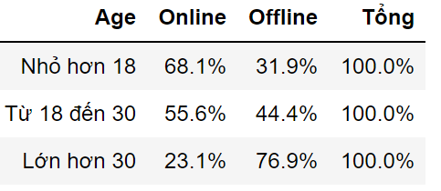

Đôi Điều Về Thống Kê
Thống kê là một dạng phân tích toán học sử dụng các mô hình, qua đó có thể cho người sử dụng thấy được insight trong các tập dữ liệu.
Có 2 loại thống kê đó là thống kê mô tả và thống kê suy luận, nghĩa của nó cũng sát với 2 cụm từ trên vậy.
Thống kê mô tả dùng để mô tả các bảng biểu, đồ thị bằng các phương pháp như dùng count, mean, sum .... từ đó thấy được thực tại và có khả năng dự
đoán được xu hướng dữ liệu. Nó là tiền đề cho thống kê suy luận để tạo ra các thuật toán nhằm dự đoán xu hướng dữ liệu, mình nghĩ phần này
nặng về tính toán hơn và nó cũng là cốt lõi của một lĩnh vực khác - Machine Learning.
Nhưng .... bài chia sẻ này chỉ giới hạn ở việc thống kê mô tả nên mình cũng không đào sâu về thuật toán. Vì hầu hết mọi người cũng đã học qua thống kê từ những năm cấp 2,3 rồi. Nó chỉ dừng lại
ở mức lý thuyết, trong khi bài tập chả mang tính ứng dụng cao. Nên mình sẽ lược bỏ hầu hết các lý thuyết dài dòng,
công thức toán học ... mà chỉ đi ôn lại những khái niệm cơ bản, và kèm theo đó là áp dụng nó vào các ví dụ sát với thực tế nhất, Let's go!!
Phân Biệt Loại Dữ Liệu
Individual - Cá thể: Bất cứ một tập dữ liệu mang tính chất thống kê đều có cá thể riêng của nó cả,
Chẳng hạn như tập dữ liệu khảo sát mức độ hài lòng của sinh viên về nhà vệ sinh mới, cá thể ở đây sẽ là các sinh viên.
Variable - Biến: Biến ở đây chỉ những chỉ số mà thống kê mô tả về các cá thể, có 2 loại biến. Đầu tiên là
Categorical và Numeric. Nó hệt hệt như qualitative data ( dữ liệu định tính )
và quantitative data ( dữ liệu định lượng ) vậy.
Qualitative - Dữ liệu định tính: Là loại dữ liệu chỉ phản ánh bản chất, nó không hề phản ánh tính hơn kém. Chẳng hạn như là họ tên, địa chỉ, giới tính ...
Quantitative - Dữ liệu định lượng: Ngược lại với dữ liệu định tính. Chẳng hạn như là tuổi, thu nhập, chiều cao, cân nặng ...

Hình 1: Các loại dữ liệu trong thống kê (Nguồn ảnh: Youtube)
Ngoài ra còn khá là nhiều khái niệm khác nhưng mình nghĩ trên đây là cốt lõi rồi, nó sẽ phục vụ cho bạn đọc hiểu được các loại dữ liệu
trong bảng biểu.
Bảng Dữ Liệu
Phải nói là bảng dữ liệu là dạng cơ bản nhất của thống kê, ở đây ngoài kĩ năng đọc hiểu bảng thì cần phải có những kĩ năng
như thao túng, truy vấn dữ liệu từ bản để tìm ra có được insight trong tập dữ liệu, ở đây mình có 2 loại bảng:
Đó là Bảng 1 chiều và Bảng 2 chiều. Bảng 1 chiều thì như hình 1 lấy, mình khá chắc mọi người cũng hình dung
nó ra sao rồi, vậy bảng 2 chiều thì sao ? Chúng ta sẽ lấy 1 ví dụ thực tế để phân tích luôn.
Hãy tưởng tượng nhé, trong tay bạn là một tập dữ liệu khảo sát khách hàng,
cụ thể là nó khảo sát cách thức mua hàng của những vị khách. Sếp của bạn yêu cầu dựa vào tập dữ liệu
trên mà bạn hãy đưa ra các nhận định khách quan nhất về khách hàng của công ty. Từ các nhận định đó công ty sẽ triển khai
các chiến dịch marketing cho hiệu quả nhất.
Đầu tiên có 2 loại biến mà bạn cần quan tâm.
Khách hàng mua online hay offline - loại dữ liệu định tính và
Khách hàng bao nhiêu tuổi - loại dữ liệu định lượng.
Và sau khi xử lý, chơi đùa, vò đầu bứt óc thì mình ra được cái bảng như này :v

Nhìn đơn giản phết, nhưng để có được bảng này thì dữ liệu phải được xử lý qua nhiều giai đoạn, tóm tắt thì ở đây mình
chia dữ liệu ra thành 2 chiều và đếm số lượng khách hàng. Đầu tiên thì mọi người sẽ tìm 2 cột Online và Offline và xem thử độ tuổi nào chiếm nhiều nhất và ... kết thúc phân tích. Cá là ai cũng nghĩ vậy, nhưng mà chuyện
cũng đơn giản như vậy thì tốt quá nhờ. Mình thì khác, khi xem bảng 2 chiều thì bạn cần xem xét tương quan cả 2 chiều của nó
Bây giờ mình xét chiều dọc trước nhé, mình sẽ tính tổng của 2 cột Online và Offline, ra được cái bảng như này.

Vậy bây giờ mình sẽ làm gì với cái bảng này ?, đó là chuyển nó qua một loại bảng là frequency table - bảng tần suất. Chúng ta sẽ được cái bảng như này.

Wow, bây giờ cái nhìn của chúng ta rõ ràng hơn rồi đấy nhỉ. Ở đây mình nhìn thấy hơn một nửa khách hàng mua theo hình thức offline có độ tuổi lớn hơn 30.
Các bạn có thể nhìn thấy sự chênh lệch rất nhiều trên cột Offline, cụ thể là % người lớn hơn 30 tuổi gấp đôi % người từ 18 đến 30 tuổi.
Do đó chúng ta có thể nhận định rằng phần lớn những người mua hàng theo hình thức offline là những người lớn hơn 30 tuổi
Vậy ở hình thức online thì sao, thật khó để đưa ra nhận định được vì đúng là người mua online có độ tuổi nhỏ hơn 18 là cao nhất.
Nhưng mức chênh lệch giữa vị trí thứ 1 và thứ 2 thật sự không quá nhiều ( 44% so với 34% ). Tiếp tục chúng ta sẽ xem xét tới chiều ngang với cách xử lý dữ liệu như trên
, chúng ta sẽ có được cái bảng như này.

Well ... bây giờ rõ part 2 rồi nhé, ở nhóm khách hàng nhỏ hơn 18 tuổi, có lượng người mua online hơn gấp đôi lượng người mua offline.
Và ở nhóm khách hàng lớn hơn 30 tuổi, chênh lệch còn lớn hơn khi người mua offline của nhóm này gấp 3 lần lượng người mua online.
Ở nhóm khách hàng độ tuổi từ 18 đến 30 là khó đưa ra nhận định nhất, vì sự chênh lệch giữa online và offline không quá cách biệt
Tóm lại, dựa vào các phân tích trên, chúng ta có thể đưa ra 1 vài nhận định như sau:
Khách hàng dưới 18 tuổi có lượng người mua online gấp đôi offline
Khách hàng trong độ tuổi 18 đến 30 thường có xu hướng mua online nhiều hơn là mua offline
Khách hàng lớn hơn 30 tuổi có lượng người mua offline gấp 3 lần online
Khách hàng có độ tuổi càng thấp thì càng có nhiều khả năng mua online hơn và ngược lại
Vậy là kết thúc phần 1, mình mong là mọi người phần nào hiểu rõ được các loại biến, cách tư duy phân tích dữ liệu ở dạng bảng. Ở các
phần tiếp theo mình sẽ đi qua các khái niệm rộng hơn, cũng như tư duy phân tích dữ liệu ở dạng biểu đồ. Cảm ơn mọi người đã đọc ạ !